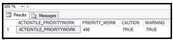

The Generic Monitor Data Retrieval web API is used to retrieve data from a stored procedure and bind it to the tile control. Also see the How to Bind Controls on Monitor Page topic for more information on binding the data to the controls on the Monitor page.
| Example Monitor Stored Procedure |
Copy Code
|
|---|---|
CREATE PROCEDURE WRK_MonitorCustomerIndicatorTile( @filterCriteria NVARCHAR(MAX), @indicatorTileName NVARCHAR(100), @cautionCriteria NVARCHAR(MAX), @warningCriteria NVARCHAR(MAX), @culture NVARCHAR(10)) AS Set NoCount ON DECLARE @warehouse as nVarchar(50); DECLARE @criteriaTempTable TABLE(filterName nVarchar(300),filterValue nVarchar(300)) /*get the where clause value*/ INSERT INTO @criteriaTempTable SELECT * FROM fn_GetMonitorFilterParameters(@filterCriteria) SELECT @warehouse = filterValue from @criteriaTempTable WHERE filterName = N'FROM_WHS' DECLARE @cautionValue as NUMERIC(9);DECLARE @warningValue as NUMERIC(9); IF(@indicatorTileName = N'IndicatorTileAtRiskWork') BEGIN SELECT TOP 1 N'INDICATORTILE_ATRISKWORK' AS N'INDICATORTILE_ATRISKWORK', COUNT(DISTINCT WORK_UNIT) AS N'AT_RISK_WORK', 'CAUTION' = (SELECT dbo.fn_GetCriticalLevel(@cautionCriteria, COUNT(DISTINCT WORK_UNIT))), 'WARNING' = (SELECT dbo.fn_GetCriticalLevel(@warningCriteria, COUNT(DISTINCT WORK_UNIT))) FROM WORK_INSTRUCTION WHERE INSTRUCTION_TYPE = N'DETAIL' AND (FROM_WHS =@warehouse) AND CONDITION IN (N'OPEN', N'IN PROCESS') AND AGING_DATE_TIME > DateAdd(DAY, -1, GETDATE()) END ELSE IF(@indicatorTileName = N'IndicatorTilePriorityWork') BEGIN SELECT TOP 1 N'INDICATORTILE_PRIORITYWORK' AS N'INDICATORTILE_PRIORITYWORK', COUNT(DISTINCT WORK_UNIT) AS N'PRIORITY_WORK', 'CAUTION' = (SELECT dbo.fn_GetCriticalLevel(@cautionCriteria, COUNT(DISTINCT WORK_UNIT))), 'WARNING' = (SELECT dbo.fn_GetCriticalLevel(@warningCriteria, COUNT(DISTINCT WORK_UNIT))) FROM WORK_INSTRUCTION WHERE INSTRUCTION_TYPE = N'DETAIL' AND (FROM_WHS =@warehouse) AND CONDITION IN (N'OPEN', N'IN PROCESS') AND PRIORITY <= 10 END ELSE IF(@indicatorTileName = N'IndicatorTileWorkOnHold') BEGIN SELECT TOP 1 N'INDICATORTILE_WORKONHOLD' AS N'INDICATORTILE_WORKONHOLD', COUNT(DISTINCT WORK_UNIT) AS N'WORK_ON_HOLD', 'CAUTION' = (SELECT dbo.fn_GetCriticalLevel(@cautionCriteria, COUNT(DISTINCT WORK_UNIT))), 'WARNING' = (SELECT dbo.fn_GetCriticalLevel(@warningCriteria, COUNT(DISTINCT WORK_UNIT))) FROM WORK_INSTRUCTION WHERE INSTRUCTION_TYPE = N'DETAIL' AND (FROM_WHS =@warehouse) AND CONDITION IN (N'OPEN', N'IN PROCESS') AND HOLD_CODE IS NOT NULL END ELSE IF(@indicatorTileName = N'IndicatorTileOpenWork') BEGIN SELECT TOP 1 N'INDICATORTILE_OPENWORK' AS N'INDICATORTILE_OPENWORK', COUNT(DISTINCT WORK_UNIT) AS N'OPENWORK', 'CAUTION' = (SELECT dbo.fn_GetCriticalLevel(@cautionCriteria, COUNT(DISTINCT WORK_UNIT))), 'WARNING' = (SELECT dbo.fn_GetCriticalLevel(@warningCriteria, COUNT(DISTINCT WORK_UNIT))) FROM WORK_INSTRUCTION WHERE INSTRUCTION_TYPE = N'DETAIL' AND (FROM_WHS =@warehouse) AND CONDITION IN (N'OPEN', N'IN PROCESS') END ELSE IF(@indicatorTileName = N'IndicatorTileInProgressWork') BEGIN SELECT TOP 1 N'INDICATORTILE_INPROGRESSWORK' AS N'INDICATORTILE_INPROGRESSWORK', COUNT(DISTINCT WORK_UNIT) AS N'INPROGRESSWORK', 'CAUTION' = (SELECT dbo.fn_GetCriticalLevel(@cautionCriteria, COUNT(DISTINCT WORK_UNIT))), 'WARNING' = (SELECT dbo.fn_GetCriticalLevel(@warningCriteria, COUNT(DISTINCT WORK_UNIT))) FROM WORK_INSTRUCTION WHERE INSTRUCTION_TYPE = N'DETAIL' AND (FROM_WHS =@warehouse) AND CONDITION IN (N'IN PROCESS') AND USER_ASSIGNED IS NOT NULL END If @@ERROR <> 0 GoTo ErrorHandler Set NoCount OFF Return(0) ErrorHandler: Return(@@ERROR) |
|
Stored Procedure Input Parameters: This stored procedure has 5 input parameters: filterCriteria, indicatorTileName, cautionCriteria, warningCriteria and culture.
| Parameter Name | Description |
| filterCriteria |
Filter criteria can have multiple comma separated values and should end with a semicolon. e.g. 'from_whs=MN, WORK_INSTRUCTION_PRIORITY<= 10;' |
| indicatorTileName |
The name of the tile control to which the data is to be fetched is defined here. e.g. 'IndicatorTilePriorityWork' Note: This should match with the tile control name defined in metadata. |
| cautionCriteria |
Pass the caution criteria here. When the criteria is met the tile will change color to indicate the caution level has been met. e.g. '>=30' |
| warningCriteria |
Pass the warning criteria here. When the criteria is met the tile will change color to indicate the warning level has been met. e.g. '>40' |
| culture |
Culture is passed here. e.g. 'en-us' |
Return Data from Stored Procedure: The Stored procedure returns data with 4 columns. The details are below.
| Column Name | Description |
| INDICATORTILE_<name> | Column name should start with INDICATORTILE_. |
| <DataSourceName> |
Represents the name of the control to which the data should bind. This column data will bind to the tile control. Note: This column name ( in this e.g. "PRIORITY_WORK") should match the data source property of the control name in the metadata. |
| caution | This column data will be true when the caution criteria is met. |
| warning | This column data will be true when the warning criteria is met. |
Below is the screen shot for the output of the Stored procedure.
